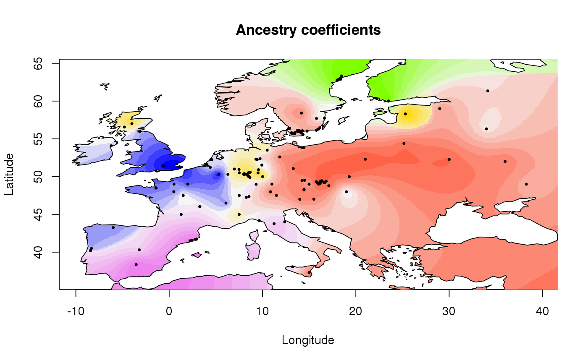

This function displays interpolated values of ancestry coefficients on geographic maps.
# S3 method for tess3Q plot(x, coord, method = "map.max", resolution = c(300, 300), window = NULL, background = TRUE, map.polygon = NULL, raster.filename = NULL, interpolation.model = FieldsKrigModel(10), col.palette = CreatePalette(), ...)
| x | an object of class |
|---|---|
| coord | a numeric matrix of dimension \(n\) times 2 where \(n\) is the number of individuals. The matrix must contain (Longitude, Latitude) coordinates for all individuals. |
| method | a character string |
| resolution | an integer vector |
| window | an integer vector for the plotting window, such that |
| background | if |
| map.polygon | an object of class |
| raster.filename | a raster file name used to compute the background stencil.
This is an alternative method to crop the interpolating surfaces. The default method uses |
| interpolation.model | an interpolation model used to compute the interpolating surface. Interpolation models can use the
functions |
| col.palette | a list of color palettes. Color palettes can be defined by using the function |
| ... |
|
None
library(tess3r) # Retrieve a dataset data(data.at) # Run of TESS3 obj <- tess3(data.at$X, coord = data.at$coord, K = 5, ploidy = 1, method = "projected.ls", openMP.core.num = 4)#> == Computing spectral decomposition of graph laplacian matrix: done #> ==Main loop with 4 threads: done# Get the ancestry matrix Q.matrix <- qmatrix(obj, K = 5) # Plot the spatial interpolation of the ancestry matrix plot(Q.matrix, data.at$coord, method = "map.max", resolution = c(400,400), interpolation.model = FieldsKrigModel(10), cex = .4, xlab = "Longitude", ylab= "Latitude", main = "Ancestry coefficients")#>#>